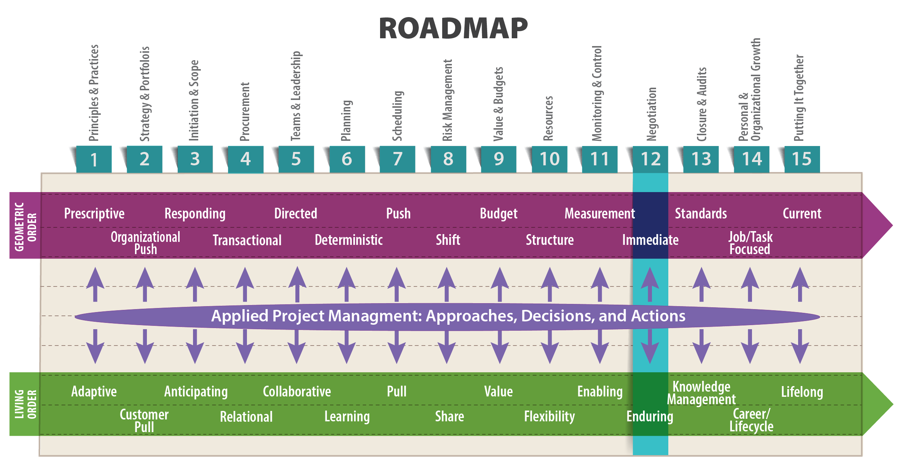

The first duty of a wise advocate is to convince his opponent that he understands their arguments.
—Samuel Taylor Coleridge

Objectives
After reading this lesson, you will be able to
The need for negotiation, or settling differences, is a fact of human life. On a typical morning you might negotiate how much longer your teenager gets to sleep, who gets to use the shower first, and whose turn it is to drive for carpool. Once you get to work, you’ll probably encounter even more opportunities for negotiation, some of which could have high-stakes outcomes for your projects, your organization, and your career. Your ability to handle even small-scale negotiations (say, who’s responsible for changing the printer’s toner cartridge) can have a surprisingly large effect on your team’s sense of cohesion and purpose. Some negotiations are informal—the toner cartridge, for instance—while others, such as negotiating with a union, are highly formal, governed by a slew of state and federal laws.
You can tell a lot about a person’s negotiation skills from their definition of the term. Short-sighted, ineffective negotiators view a negotiation as a means of getting what they want. Wiser, more practiced negotiators would be more likely to define negotiation as a discussion with the goal of reaching an agreement that is moderately satisfying to both parties. A negotiation is not a competition. There should be no losers. Nobody gets everything they want in a successful negotiation, but everybody gets something. Perhaps most importantly, a wisely conducted negotiation ensures that the parties can continue to work together in the future.
Since negotiation is such an integral part of human life, it is a well-studied art. There are many books on the topic, but they all come down to a few basic ideas: learn all you can about the other parties in the negotiation, use your emotional intelligence to perceive unspoken issues, seek a resolution that works for everyone as much as possible, and avoid an “us versus them” outcome. Most importantly, don’t ever assume that you will get everything you want in a negotiation. For people who tend to think in terms of absolutes, negotiating, which is all about compromise, can feel like foreign territory. The goal of any negotiation is finding a workable solution for all parties and not about one party beating the other.
Project managers must negotiate constantly, and not just when working out contractual arrangements with suppliers or subcontractors. This list summarizes some project management situations that call for good negotiation skills.
To be an effective negotiator, a project manager must be empowered with the necessary authority. It’s important to be able to make on-the-spot decisions with an understanding of the consequences, which should be worked out beforehand through scenario planning. All parties will be frustrated if a negotiator lacks the authority to negotiate and makes commitments that cannot be honored, or if the negotiator continually needs to seek approvals.
In his book The New Negotiating Edge: The Behavioral Approach for Results and Relationships, Gavin Kennedy advocates a middle path between hard-nosed, aggressive tactics (which he calls red behavior) and a completely rational, win-win style that seeks to satisfy all parties (blue behavior). This middle path—purple behavior—focuses on the two-way exchange necessary to successfully conclude any negotiation. Everyone has to give up something to get something. In a review of Kennedy’s book, Roger Trapp explains:
Kennedy saw the need for a different approach because the red style, by assuming that negotiation is all about manipulation, tends to harden attitudes, while the blue one is over-trusting of other people.
“The key to solving dilemmas of trust and risk,” he writes, “is not to alternate between non-trusting red and too-trusting blue, but to fuse them into purple conditional behavior.
“This fusion neatly expresses the essence of the negotiation exchange: give me some of what I want (my red results side) and I will give you some of what you want (my blue relationship side). Red is taking behavior, blue is giving behavior and purple is trading behavior, taking while giving.”
The strength of purple behavior, he argues, is that it is a two-way exchange rather than a one-way street and moreover deals with people as they are and not how you assume or want them to be. (1998)
In their seminal 1981 book, Getting to Yes, Roger Fisher and William Ury describe the most common form of negotiation as the kind of haggling you might engage in when buying a used car. You might start by taking up a position at the low end—say, $4,000. Meanwhile, the car dealer takes up a position on the high end—say, $12,000. Then the two of you proceed to argue the invalidity of the other’s position (“$4,000 isn’t a serious offer!”), while altering your positions bit by bit, until finally you settle on an acceptable mid-point of $8,000. According to Fisher and Ury, this kind of negotiation, known as positional bargaining, forces people to take up positions and defend them:
In positional bargaining you try to improve the chance that any settlement reached is favorable to you by starting with an extreme position, by stubbornly holding to it, by deceiving the other party as to your true views, and by making small concessions only as necessary to keep the negotiation going. The same is true for the other side. Each of those factors tends to interfere with reaching a settlement promptly. The more extreme the opening positions and the smaller the concessions, the more time and effort it will take to discover whether or not agreement is possible. (2011)
The problem with this type of negotiation is that it creates a contest of wills that can permanently damage relationships:
Each negotiator asserts what he will and won’t do. The task of jointly devising an acceptable solution tends to become a battle. Each side tries through sheer willpower to force the other to change its position…. Anger and resentment often result as one side sees itself bending to the rigid will of the other while its own legitimate concerns go unaddressed. Positional bargaining thus strains and sometimes shatters the relationship between the parties. Commercial enterprises that have been doing business together for years may part company. Neighbors may stop speaking to each other. Bitter feelings generated by one such encounter may last a lifetime. (Fisher and Ury)
In as much as time is money, positional bargaining is also expensive because it increases the number of decisions a negotiator has to make, such as “what to offer, what to reject, and how much of a concession to make.” The difficulty involved in making so many decisions makes it easier for parties to delay making any decision at all:
Decision-making is difficult and time-consuming at best. Where each decision not only involves yielding to the other side but will likely produce pressure to yield further, a negotiator has little incentive to move quickly. Dragging one’s feet, threatening to walk out, stone walling, and other such tactics become commonplace. They all increase the time and costs of reach an agreement as well as the risk that no agreement will be reached at all. (Fisher and Ury)
Effective negotiators avoid positional bargaining at all costs. Rather than setting up a “me versus you” situation, negotiators should try what Fisher and Ury call principled negotiation, which is based on four essential points:
The first point, separating the people from the problem, focuses on removing emotion from the negotiating process. The second point focuses on the fact that nothing revs up emotion like taking and defending a position. By abandoning positions and focusing on interests instead, the parties involved in the negotiation will begin to see themselves as collaborators, trying to solve a problem together. This in turn makes it easier to brainstorm a list of possibilities, which you can then evaluate based on objective standards agreed to by all parties.
It’s also helpful to think in terms of what negotiating parties value. If the other party values something highly and you don’t, that is the perfect thing to trade for something else that is valuable to you and not so much to the other side. This constructive approach helps prevent the kind of roadblocks that arise when you assume that giving anything away, even if you didn’t value it, is a loss. Being open about what you value at the start of a negotiation can save a lot of time, helping you achieve a meaningful trade more quickly. Some might argue that you don’t want to “show your cards” too soon, but in a principled negotiation, in which all parties are focused on achieving the best possible outcome instead of simply beating the other party, putting all our cards on the table works very well.
Principled negotiation, as described by Fisher and Ury, is in part an exercise in learning about your negotiating partner. But you also have to be clear about your own motivations and your personal bargaining style. The more you know about yourself and your negotiating partner, the more options you have as the bargaining unfolds. In Bargaining for Advantage: Negotiation Strategies for Reasonable People, G. Richard Shell argues against the existence of any one, all-purpose technique for closing a deal:
Experienced negotiators know that there are too many situational and personal variables for a single strategy to work in all cases. To become more effective, you need to get beyond simple negotiation ideas…. You need to confront your anxieties, accept the fact that no two negotiators and situations are the same, and learn to adapt to these differences realistically and intelligently—while maintaining your ethics and self-respect…. Many people are naturally accommodating and cooperative; others are basically competitive; some are equally effective using either approach. But there is only one truth about a successful bargaining style: To be good, you must learn to be yourself at the bargaining table. Tricks and stratagems that don’t feel comfortable won’t work. Besides, while you are worrying about your next tactic, the other party is giving away vital clues and information that you are missing. To negotiate well, you do not need to be tricky. But it helps to be alert and prudent. The best negotiators play it straight, ask a lot of questions, listen carefully, and concentrate on what they and the other party are trying to accomplish at the bargaining table. (2006, xvii-xviii)
Once they have clarified their own biases in the negotiation process, effective negotiators turn their focus to learning about their negotiating partners and adapting in response to what they’ve learned. In other words, effective negotiators work in living order, staying flexible and keeping their eyes open to new information that might change their approach in the negotiation room. Shell’s approach to bargaining, which he calls information-based bargaining, capitalizes on this living order understanding of the changeable nature of human interactions. His approach focuses on three main aspects of negotiation:
Solid planning and preparation before you start, careful listening so you can find out what the other side really wants, and attending to the “signals” the other party sends through his or her conduct once bargaining gets under way. As the name suggests, Information-Based Bargaining involves getting as much reliable knowledge about the situation and other party as possible…. Information-Based Bargaining is a “skeptical school” of negotiation. It treats each situation and person you face as unique. It cautions against making overly confident assumptions about what others want or what might be motivating them. And it emphasizes “situational strategies” tailored to the facts of each case rather than a single, one-size-fits-all formula. (2006, xviii-xix)
Information-based bargaining is useful in all kinds of negotiations, helping to calm disputants in even the most contentious situations. The first phase of the process is careful research into the concerns of all parties. Robert L. Zorn explains: “The research becomes the underpinning of information-based bargaining.” For example, in a schoolboard/union negotiation, it’s helpful to start by collecting reliable information on salaries. According to Zorn:
Research should show the historical trends of salary increases as well as how those salaries rank on a comparative basis to similar school districts. This information can be compiled by percentages or dollars, by salaries paid for specific positions or by salaries as a percentage of the budget over the years and by comparability with salaries in other school districts with like fiscal resources and similar demographics….
The idea is to put together enough information that most individuals looking at the information will come to the same or a similar conclusion as to where salaries should or could go in the new agreement. Thus the bargaining is driven by information rather than what one side or the other side wants without regard to what the information shows.
This style of bargaining is predicated on the assumption that educated persons looking at the same information will come to the same or similar conclusions. Obviously, this doesn’t happen every time. In cases where it doesn’t, and matters must go to mediation, all the information compiled is extremely helpful in presenting one’s case to the mediator. The mediator also will use this information to try to get the parties to say yes to an item based on factual data rather than emotion or what one side wants. (n.d.)
For many people, the prospect of a negotiation can generate a wave of anxiety and other negative emotions. So, it’s good to keep in mind that working out a deal with another person can also generate positive emotions, especially if you are able to
Indeed, many experienced engineers find that well-conducted negotiations result in deep, trusting relationships that last throughout their careers.
Still, many people struggle with negative emotions—fear, anger, suspicion, jealousy, regret, resentment, and contempt—when involved in negotiations. General Motors took this fact into consideration when it launched its Saturn division in the 1990’s, opening dealerships committed to a strict “no-haggle” policy. That, plus “the absence of a high-pressure sales environment and the high level of customer satisfaction contributed to a sense of brand loyalty among Saturn’s customers” (Wharton School 2009). For the first time in the United States, you could walk into a dealership and buy a car without having to negotiate. For some, that felt like a huge relief.
Of course, negotiation avoidance is not a realistic option in all facets of life. But it is possible to minimize negative emotions by preparing carefully for any negotiation, and by focusing on positive emotions instead. In their book, Beyond Reason: Using Emotions as You Negotiate, Roger Fisher and Daniel Shapiro present a strategy for using positive emotions as a negotiating tool. They argue that it is impossible to evaluate and respond to every single emotion that arises among the various parties in a negotiation. Instead, they recommend focusing on the core concerns that psychologists tell us generate emotions in most people.
According to Fisher and Shapiro, core concerns are “human wants that are important to almost everyone in virtually every negotiation. They are often unspoken but are no less real than our tangible interests. Even experienced negotiators are often unaware of the many ways in which these concerns motivate their decisions” (2005, 14). Fisher and Shapiro focus on the following five core concerns:
They describe the five core concerns in Table 12-1.
Table 12-1: Five core concerns that affect everyone in a negotiation (Source: Beyond Reason: Using Emotions as You Negotiate, by Roger Fisher and Daniel Shapiro, Table 3, p. 17.)
At a Wharton School conference on women in business, a group of seasoned female business professionals discussed gender differences in negotiation strategies and effectiveness. They agreed that because women tend to be better listeners than men, they have a pronounced advantage in many negotiations. However, because they tend to underplay their own value in a situation, they often fail to negotiate successfully on their own behalf. You can read a summary of the conference discussion here: http://knowledge.wharton.upenn.edu/article/women-and-negotiation-are-there-really-gender-differences/. This article discusses differences in the way men and women negotiate, with suggestions on how each gender can learn from the other: http://work.chron.com/can-gender-affect-negotiation-5771.html.
Fisher and Shapiro’s book includes a chapter on each core concern, with plentiful advice on how to use them to stimulate positive emotions such as enthusiasm, happiness, and hopefulness, which in turn can make people more prone to cooperate, more creative, and more inclined to trust each other.
In most cases, focusing on core concerns will keep the conversation moving toward a successful resolution. However, you do have to be prepared for the power of negative emotions which, according to Fisher and Shapiro, can have the following ill effects:
The secret to managing negative emotions is, first and foremost, being aware of them. Fisher and Shapiro recommend taking your emotional temperature throughout a negotiation “to catch your emotions before they overwhelm your ability to act wisely” (147). They offer a number of suggestions for calming yourself, including breathing deeply, temporarily changing the subject, or taking a quick break that allows you to leave the room. After a negotiation is over, try to take time to evaluate how your core concerns, and the core concerns of your negotiating partner, stimulated negative emotions in the first place.
Cross-cultural issues can add complexity to any negotiation. For example, people from different cultures might have different conversation styles or conflicting ideas on the importance of punctuality. They might even approach a negotiation with totally different understandings of the overall purpose of a negotiation in the first place. “For deal makers from some cultures, the goal of a business negotiation, first and foremost, is a signed contract between the parties. Other cultures tend to consider that the goal of a negotiation is not a signed contract but rather the creation of a relationship between the two sides” (Salacuse 2004).
In many cultures, saving face—or, avoiding humiliation—is an essential concern in any negotiation. In that case, it may be necessary to negotiate a compromise in which one party appears to have agreed to important concessions. In some cultures, there is also a question of status. Parties will only accept negotiating with someone of perceived equal status to themselves. This web page offers some helpful suggestions for face saving in Asian cultures: https://www.tripsavvy.com/saving-face-and-losing-face-1458303.
This helpful article explains ten ways that culture can affect a negotiation: http://iveybusinessjournal.com/publication/negotiating-the-top-ten-ways-that-culture-can-affect-your-negotiation/. This article from the Harvard Business Review provides five rules of thumb for negotiating with someone from a different culture: https://hbr.org/2015/12/getting-to-si-ja-oui-hai-and-da.
Brian Price is the former chief power train engineer for Harley-Davidson, a lecturer in the School of Engineering & Applied Science at Aston University, UK, and and an adjunct professor in the University of Wisconsin-Madison Master of Engineering in Engine Systems program. In a conversation with the authors, he shared this example of the kind of misunderstandings that can arise when negotiating across cultures:
My experience negotiating in Korea was enlightening. It is impolite to say “no” in Korea. It is considered very blunt and rude. During negotiations, I might say something like “Can we agree to a delay in delivery by two weeks?” The Korean negotiators would pause and then say “mmm…yes.” I thought we had just negotiated a delay, but we hadn’t. What the Korean negotiators meant was “I hear what you say. I’m not going to say no and be rude, but I don’t agree with your proposal.” At the time, I did not pick up on the subtle cues of the pause and the meaning of a single “yes.” If they did agree to something, it was acknowledged by a double yes, said clearly and without hesitation—“Yes, yes.” It took me several misunderstandings over several months to work this out. Such cultural confusion can be compounded by a linguistic quirk in which Japanese and Koreans answer negative questions with a positive answer, as described in this web page: http://en.rocketnews24.com/2016/01/23/when-yes-means-no-the-japanese-language-quirk-that-trips-every-english-speaker-up/.
As Stan Lee, the creator of Spider Man, so memorably said, “With great power comes great responsibility.” As you hone your negotiating skills, you take on the moral burden of ensuring that you don’t use your skills to force someone into a bad situation. You also need to factor in the greater good—that is, issues that lie beyond your immediate interests or the interests of your organizations—and think about what’s best for society as a whole.
To help evaluate the ethics of any situation, the Harvard Law School’s Program on Negotiation suggests asking yourself five questions:
If you can answer yes to all five questions, then you can probably assume that you are conducting an ethical and honorable negotiation.
But keep in mind that, in some situations, the ethical solution may not actually be legal. For example, lawyers may perceive the moral superiority of their opponents’ position, but be legally bound to act only in the interests of their clients. One particular challenge is the differing laws and ethical standards around the world. For international companies this can be a tricky area.
Ultimately, you need to follow your own moral compass. You should always stay within the law, but also ensure that your personal ethical standards are not being compromised through a negotiation process. If you find yourself in a situation in which your ethical and legal obligations are murky, seek out advice from a more experienced professional in your field. You should also consult the Code of Ethics for Engineers, published by the National Society of Professional Engineers, which is available here: https://www.nspe.org/sites/default/files/resources/pdfs/Ethics/CodeofEthics/Code-2007-July.pdf.
For a more in-depth discussion of ethics and bargaining, check out Chapter 11 of G. Richard Shell’s book Bargaining for Advantage. Among many helpful ideas, he includes some suggestions on what to do when you face unethical tactics from your negotiating partners.
Robert Merrill, Senior Business Analyst at the UW-Madison and a seasoned project manager, has spent a lot of time reading and thinking about negotiation tactics. In his project management work this was essential, he says, because “a lot of projects live or die on how they handle conflict, which means negotiation is really the art of handling disagreements” (pers. comm., June 19, 2018).
One essential part of negotiating is remembering that most people negotiate in good faith, but some people routinely negotiate in bad faith. This is especially true of people with dark triad personalities—that is personalities marked by narcissism, a lack of empathy (psychopathy), and Machiavellianism, or a desire to manipulate others (Whitbourne 2013).
Here’s what Merrill has to say on the topic:
Most of the time, negotiation is not a competition, but sometimes, but when you are dealing with a dark-triad personality it absolutely is. Such people are attracted to power, and they tend to climb organizational ladders at least for a while, because they “get things done” and have a way of offloading their failures and avoiding the collateral damage.
On the other hand, just because a small percentage of the population is a psychopath, doesn’t mean everyone is. So don’t react to each aggressive negotiation request with weaponized facts, treating the negotiation like a form of combat. In other words, assume the people across the table are negotiating in good faith.
But when you do verify that you’re sitting across from someone who doesn’t care if you make a promise your team can’t keep, which will burn them up and damage your reputation in the process, you have to behave quite differently. Verify the support of your allies. Marshal your facts. Draw on your deepest well of unconditional positive regard—the other person is a human soul, too, and you have no idea how they got to where they are. Then crank your boundaries and empathy up to 10 and wade in.
To prepare for this kind of situation, I suggest reading Never Split the Difference, by Chris Voss. (pers. comm., June 19, 2018)
As a project manager, you will often have to marshal your negotiation skills in order to resolve disputes among stakeholders. Most disputes are small affairs that people can work out amongst themselves. On the other end of the spectrum are complicated and highly charged legal disputes that require the work of lawyers specially trained in dispute resolution law. Hopefully your experience will be limited to the former, but as a project manager you should at least be familiar with the following terms:
You can avoid disputes in the first place by doing the following:
Consensus building, which is widely used to solve complicated environmental and public policy disputes, is “useful whenever multiple parties are involved in a complex dispute or conflict. The process allows various stakeholders (parties with an interest in the problem or issue) to work together to develop a mutually acceptable solution” (Burgess and Spangler 2003). Consensus-building emphasizes working toward a solution that everyone can live with. It is typically time-consuming and doesn’t work for every type of problem, but it can result in satisfying long-term solutions to seemingly intractable problems.
Consensus building is especially effective when
For more on consensus building, see the following:
Burgess, Heidi, and Brad Spangler. 2003. “Consensus Building.” Beyond Intractability. September. http://www.beyondintractability.org/essay/consensus-building.
Business Dictionary. n.d. “Dispute Resolution.” BusinessDictionary. Accessed June 15, 2018. http://www.businessdictionary.com/definition/dispute-resolution.html.
Fisher, Roger, and Daniel Shapiro. 2005. Beyond Reason: Using Emotions as You Negotiate. New York: Penguin Books.
Fisher, Roger, and William Ury. 2011. Getting to Yes: Negotiating Agreement Without Giving In, Updated and Revised Edition. Edited by Bruce Patton. New York: Penguin Books.
Harvard Business Review. 2017. “Negotiation: You Can Have Too Many Options.” Harvard Business Review, September-October: 30.
Program on Negotiation: Harvard Law School. 2018. “What are the Three Basic Types of Dispute Resolution? What to Know About Mediation, Arbitration, and Litigation.” PON. April 19. http://www.pon.harvard.edu/daily/dispute-resolution/what-are-the-three-basic-types-of-dispute-resolution-what-to-know-about-mediation-arbitration-and-litigation/.
Salacuse, Jeswald W. 2004. “Negotiating: The Top Ten Ways that Culture Can Affect Your Negotiation.” Ivey Business Journal, September/October. http://iveybusinessjournal.com/publication/negotiating-the-top-ten-ways-that-culture-can-affect-your-negotiation/.
Shell, G. Richard. 2006. Bargaining for Advantage: Negotiation Strategies for Reasonable People, Revised and Updated Edition. New York: Penguin Books.
Trapp, Roger. 1998. “How to Get What You Really Want.” Independent, April 2. https://www.independent.co.uk/arts-entertainment/how-to-get-what-you-really-want-1153841.html.
Voss, Chris. 2016. “5 Tactics to Win a Negotiation, According to an FBI Agent.” Time, May 25. http://time.com/4326364/negotiation-tactics/.
Wharton School. 2009. “Saturn: A Wealth of Lessons from Failure.” Knowledge@Wharton. October 28. http://knowledge.wharton.upenn.edu/article/saturn-a-wealth-of-lessons-from-failure/.
Wheeler, Michael. 2017. “5 Principles of Negotiation to Boost Your Bargaining Skills in Business Situations: How to Use the Principles Behind Negotiation Ethics to Create Win-Win Agreements for You and Your Bargaining Counterpart.” PON. June 7. http://www.pon.harvard.edu/daily/negotiation-training-daily/questions-of-ethics-in-negotiation/.
Whitbourne, Susan Krauss. 2013. “Shedding Light on Psychology’s Dark Triad.” Psychology Today. January 26. https://www.psychologytoday.com/us/blog/fulfillment-any-age/201301/shedding-light-psychology-s-dark-triad.
Zorn, Robert L. n.d. Information-Based Bargaining for a New Age. Accessed June 15, 2018. http://www.aasa.org/SchoolAdministratorArticle.aspx?id=8034.